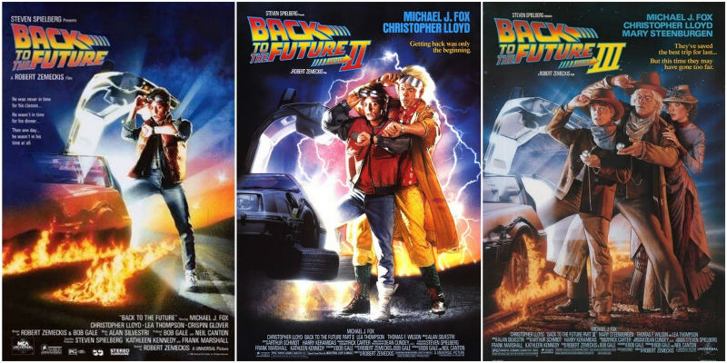
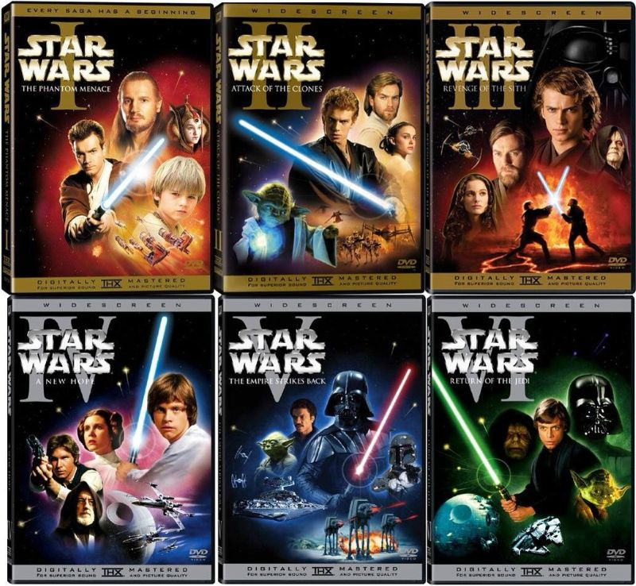
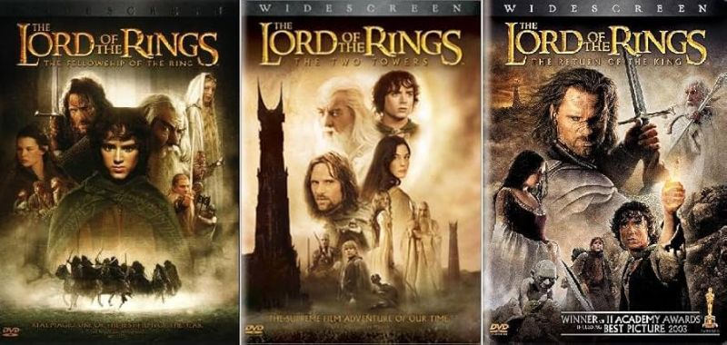
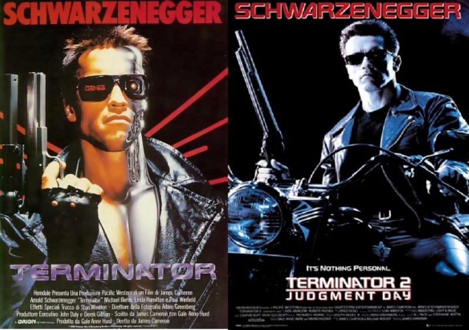
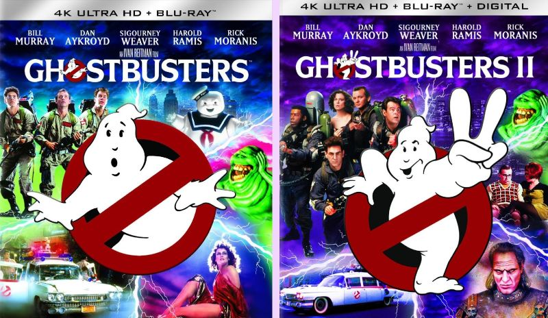
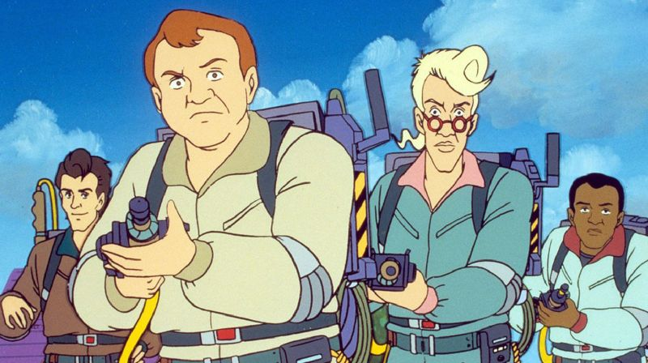
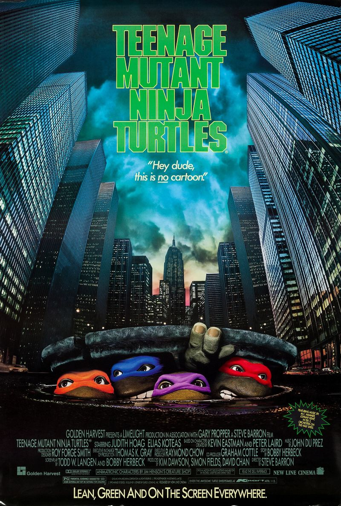

Películas y series
26 de Septiembre, 2025
Películas favoritas
Me preguntabas cuál es mi película favorita, pero es que son varias las películas que me gustan tanto, que a todas las
podría considerar mis favoritas. Es imposible que elija solo una. Así que te hablaré de todas las que me
gustan. El orden en el que las menciono no tiene relación con su importancia o nivel de gusto.
Me gustaría empezar con sagas completas. La primera que me viene a la mente es Volver al Futuro. Tal vez no sea perfecta pero es una de las que mas disfruto ver. Y no puedo elegir una sóla, tengo que ver la trilogía completa.

Dato curioso: En algún video de YouTube escuché que los realizadores de esa trilogía (Spilberg y Zemeckis) se niegan rotundamente a hacer una continuación, precuela o remake, porque consideran que les quedó tan bien que no necesitan moverle nada más.La otra trilogía que me gusta bastante es la de precuelas de Star Wars (episodios 1, 2 y 3). Y aunque sé que muchos las odian, creo que el hecho de que soy de la generacion que le tocó verlas en el cine, me hace apreciarlas más. También me gustan las de la trilogía original (episodios 4, 5 y 6), pero la verdad esas me daban sueño cuando las pasaban en la tele, jeje.

La trilogía del Señor de los Anillos también es bastante buena. Solo que admito que sí es un poco densa, por lo mismo de que tiene una mitología muy rica y un mundo gigantesco muy variado, el querer meter todo eso en las películas, las hizo muy largas y pesadas de ver para algunos espectadores. Pero tanto la historia como la calidad de las adaptaciones al cine son de lo mejor que he visto.

Hay un par de películas que me gustaría incluir aquí aunque no sean una trilogía. Las primeras dos de Terminator son de lo mejor que he visto en cine de acción ochentero o noventero. También las consideraría parte de mis favoritas.

Otras dos que no son trilogía pero que sí son de las que más disfruto son las de los Cazafantasmas 1 y 2. Aunque son algo distintas una de otra, la primera tiene un humor como que más para adultos y la segunda parece estar hecha más para niños. De hecho para mí, el videjuego (que me regalaste en Steam) sigue siendo como la tercera parte de esa historia. Las nuevas películas ya no tomaron en cuenta la trama del videojuego pero estuvieron bien también. Aún así, me sigo quedando con las primeras dos.

NOTA: A pesar de mi gusto por las películas, sigo disfrutando mucho más la serie animada de los Cazafantasmas. Abordaré el tema cuando hable de series.
Una situación muy parecida me pasa con las Tortugas Ninja, ya que me gustan mucho las primeras dos películas (más la primera), pero no me llama la atención la tercera ni las nuevas que han hecho que se ven horribles. Respecto a la caricatura, esa de plano no me gusta tanto. Era chistosa pero algo boba.

Y pues ya dejando de lado las películas que forman sagas o trilogías, hay muchas películas que
podría considerar mis favoritas, ya que soy capás de veras una y otra vez, casi sin cansarme.
Empezando por las de Studio Ghibli, esas películas de verdad que son obras maestras. Las que más me han
gustado son:
El viaje de Chihiro: Es la primera que vi del estudio y quedé maravillado por la calidad de sus dibujos
y por lo atrapantes que son sus historias, a pesar de ser medio extrañas. Algo tienen esas
películas que me hacen sentir bien, me transmiten una sensación de calma.
Mi vecino Totoro: Es una de las películas mas tiernas y a las vez sencillas a nivel narrativo que he visto. Pero está tan bien hecha, que en ningun momento se me hace aburrida. Me hace desear vivir en una casa de campo como la de los protagonistas.
Porco Rosso: Aunque es un poco extraña, me cae super bien el protagonista. Y me gusta que su mensaje, como en la mayoría de las películas de Miyasaki es anti bélico. Me gusta mucho ver esa película.
Voy a continuar con películas que llegaron a mi lista de favoritas por la tremenda carga emocional que me dejaron al verlas. Dicen que para que algo se considere arte, debe hacer sentir algo al espectador. Y estas películas me movieron los sentimientos, casi como si yo hubiera vivido esas historias. De hecho todas me hacen llorar irremediablemente. A pesar de haberlas visto una y otra vez.
Hachiko: Aunque no me gusta tener mascotas, esta película me conmueve mucho. Refleja lo que pasa cuando una persona crea un vinculo muy especial con su mascota. Los animales así suelen ser muy nobles y muy fieles.
Milagros inesperados: Es una de esas películas que disfruto tanto que no se me hacen pesadas las tres horas que dura. Toda la historia de principio a fin es muy interesante y sobre todo, muy conmovedora.
Que bello es vivir: Este drama navideño de 1946 me hizo pensar mucho sobre cómo nuestras acciones por muy insignificantes que parezcan, pueden cambiar la vida de todos los que nos rodean. Te la recomiendo mucho si no la haz visto.
Milagro en la celda 7: Me refiero a la version original, la Coreana del año 2013, no al remake turco. Es la película mas desgarradora que he visto y por mucho. Me conmovió demasiado. Durante las escenas finales, o sea las más dramáticas, no puedo evitar chillar como nena. 🤣
Aun faltan bastantes películas que considero mis favoritas, pero tendré que continuar después.
← Volver a Historias